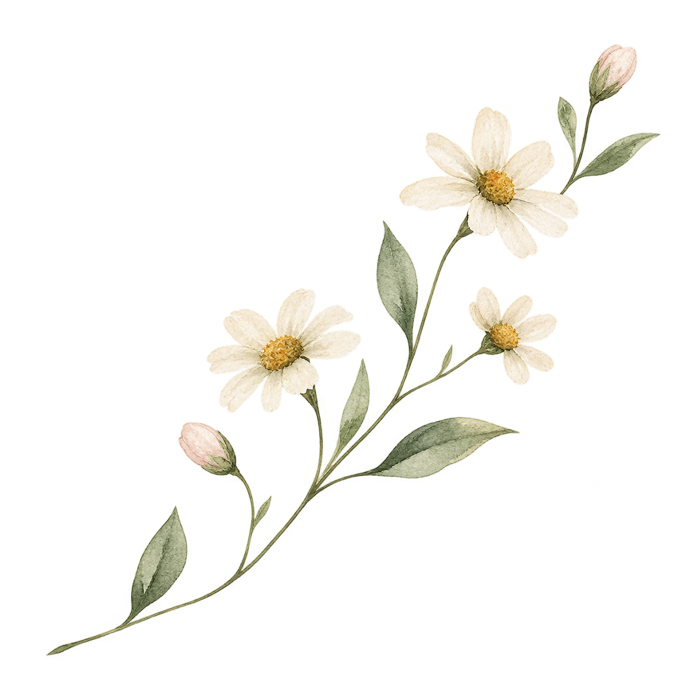
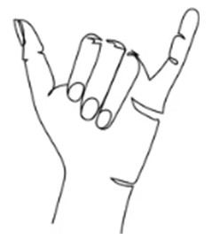

Flimsy Words
In celebration of Karen Holm Hansen Lux
Look
Hello-o-o-o.
Just so everyone knows – bathrooms are on the back hall and we have sky lanterns in the front hall – Karen really likes them and it’s a good way for us to get messages to her – you’re invited to write a message for Karen or just say hi – when the time is right, we’ll launch them from the pier and be sure she gets them.
And we’ve been enjoying music from the Silver Bell Jazz Band – Karen’s favorite – I was thrilled they could be here – they come all the way from the bay area - & I don’t mean Mckan’s Bay on the Rappahannock River – or the Chesapeake either – I mean the west coast bay area - so when you get a chance, be sure to welcome them to our side of the world and let them know you appreciate their contribution to our celebration.
I have an audio track playing in the background that is a live recording of sounds from an Ordinary Day in our yard on Cold Bud Lane – Karen & I enjoyed listening to it when we weren’t able to be there. Thomas snagged it for us this spring.
I should know everyone here, but I’m pretty sure I don’t know this many people - my name is John Lux - Karen and I have been very, very, very special best friends for a while.
Sometimes when Karen and I were doing things, we'd say, “If we choose this, or do things this way, it'll be better when our friends are around.”
Then we'd just look at each other and laugh and say, “Who are we kidding? We don't have any friends. Nobody's coming around here. It's just me and you, babe.”
And we were okay with that, because we liked each other's company just fine.
But I can see - Karen really does have a lot of friends.
And I want to welcome you all to our celebration of Karen and thank you for being here to help us begin our transition to -
Not healing - Not recovery - This is serious soul damage.
But maybe together we can begin our transition to sharing and loving our collective reflections of Karen—so we can keep her spirit and her energy with us.
I really hope we can do that.
It's not like we have a lot of options.
While looking around, I came across an epitaph in Karen’s things by Merrit Malloy called When I Die. I hope it was there because she liked it.
While reading through it, a line or stanza caught my eye – it reads:
“Look for me in the people I’ve known or loved
. . . . Love doesn't die. People do.”
I thought that sounded like it would be a good theme for our celebration today.
Never
It never occurred to me there was any possibility that I would ever be standing here.
I fully expected to be out of here at least 15 years ahead of Karen. That would give me plenty of time to learn the ropes of the afterlife, so I'd be ready to welcome her and show her around.
I also thought I was on track to get out of ever having to cut grass, pay bills, or find a barber.
Karen did everything.
And the kitchen—wow.
She had fun baking and cooking, and she was really good at it. She even had an ongoing sour dough project she called doughy – and doughy had a feeding schedule and needed attention – it all seemed very complicated to me. She used to tell me she thought of baking and cooking as a chemistry challenge.
She did have an older half-sister who was a chemist, so maybe there was something in the DNA. Or maybe she was just impressed with her sister. I'm not sure.
Most people keep notes with their recipes—less salt, more sugar, a couple shakes of Old Bay, something like that.
Karen kept sketches of molecular relationships with references to elements in the periodic table.
I'd have to tell her, “Come on, baby - how am I supposed to read that – can’t we just say more butter.”
That's how Karen was - she did everything.
I'd have to ask her, “Baby, isn't there something I can do for you? Something I can help you with? I like doing things for you” (- except maybe this)
I think the only things she gave me to do were things she either thought I couldn't fuck up or wouldn't hurt myself doing.
And probably a lot of us have reflections of Karen where we'd say, “Let's ask Karen about that. She'll know how it works.”
Or, “Let's wait and see if we can get Karen to help us with that.”
When we worked office together, we had a hard time keeping her from repairing the printers and copiers.
That's just how she was.
If ever something came up that needed taking care of, her first inclination was always to take care of it herself - Just do it.
Not to ask somebody else – you never knew what you might find her working on.
Remarkable
There are so many things about Karen for us to love and share.
We'll never forget her smile or her laugh, you never saw her that wasn’t there - and the subtle, unimposing good energy that was always around her.
It was so easy to get used to it—to count on what Karen brought to every situation - just by being there.
And some of the things I loved most about Karen were things she simply was not capable of.
Being mean - Being condescending =Being dishonest or manipulative.
She just was not capable of anything like that. It is nowhere to be found in her.
Karen always looked for positive outcomes in every situation. Look at the bright side - Find the good.
It sort of reminds me of the Jack Sparrow quote – “the problem is not the problem – the problem is your attitude about the problem”
Karen always had the positive outcome attitude – always looking for the good
Even when we first began to realize the gravity of our situation, the first thing she said was:
“at least I'll get to see Amelia”
She really does love Amelia – I hope they’re playing together – Amelia’s probably yawning saying “my papa bores me” – is that a pun - boars me
That's Karen – always looking for the good.

And I was always impressed by her most remarkable inner strength. I could count on one hand—with three fingers missing—the number of times I’ve seen her cry in more than 35 years. Her good energy is the foundation of the Shaka Bra gesture.Never any drama - No maintenance - Just a steady flow of unwavering strength.
I believe Karen lived to inspire.
And what made that gift so precious was that it was not something she deliberately tried to do – it just came natural to her.
It just happened through her daily choices, her daily actions, her work ethic, and the way she treated others.
It was her natural way.
There may be no greater gift than being able to naturally inspire others. Inspiration helps us think with our imagination and keeps us moving forward.
And Karen left us so much to carry forward: her example, her compassion, her positive attitude, and that determination to find the good.
Always - As her default - She knew no other way.
Karen inspired me every single day we were together – all I had to do was look at her.
It was an honor, privilege and joy to share life with someone who carried so much natural good energy.
I could not be luckier.
Words
I don't think it's possible to describe the feeling of what someone's—a very special someone's—life means to you.
Look around and all you have to work with is words – flimsy fuckin words.
It’s like trying to build a house with a bucket of wet noodles – can’t be done – the material is not there.
That's partly why I say Karen and I are very special best friends.
Saying something like married or spouse or wife or partner sounds so trivial. It sounds like some social or government form lingo. I would have to ask her – “baby there’s no check box for us on this form – what am I supposed to do ?” – she would say – “just write way more than above the married check box and let it go” – good idea
And words like privilege, joy and honor do not begin to scratch the surface either. It does not even come close to describing our connection.
There have been a lot of really smart people - most brilliant wordsmiths that have tried to describe the feeling. Like Emily Dickinson’s, beautiful poem – “This world is not conclusion – beyond lies a sequel – invisible as music but positive as sound” – it is an awesome poem !
Or Mary Oliver’s poem - “If there is life after earth life, will you come with me ?”
Or we can look to other languages which do a much better job of expressing a whole list of feelings in a single word – like hygge in Danish – life moments brimming with happiness, comfort, loved ones, favorite things and beautiful places
You can look through all of this and all you can say is - that’s all really good, but - it still does not cover it – the feeling is way too big, way too complicated, has way to many dimensions and is unique for all of us – it’s just stuck somewhere inside with no way out
Probably the best we can do is shining - Maybe sometimes it's better to share what we feel without words - Without saying anything.
Of course, that would get a bit tricky on radio - I think they call that dead air – maybe instead of apologizing for dead air the host should say something like “I hope you enjoyed our moment of shining“
But when we're together, it’s okay to dead air.
We can just be together - Feel together - Shine together.
Karen and I touched every day without talking.
It may look like silence, but there could be a lot of communication going on or we may just be enjoying each other’s company – either way, it’s more than you could do with just words and a lot more sincere and a lot less complicated.
There's a lot we can enjoy together and share together without words.
Lucky
Most couples —probably all couples get the questions:
“How did y'all meet?” And: “How long have y'all been together?” (– one thing that is pretty cool is you can see the office building where we met from here – just a couple of blocks west – it’s the Monroe building)
They seem like pretty simple questions - the first one is easy.
We played on the same softball team in the state agencies rec league.
It was a lot of fun. I hope they still do it.
If it weren't for that softball team, we might never have met.
We worked for the same agency, but there was a couple of hundred people and Karen worked on the third floor in accounting and I worked on the second floor in data processing.
I never went to the third floor and was head-down busy.
We were lucky to meet playing softball.
But the question, “How long have y'all been together?” is a little different.
Neither one of us was sure when we started shining together.
And we both had the feeling this wasn't our first go-round. Our frequent deja-vus came from different times and different places - if I could find my genetic memory, I'm sure I'd find Karen there too.
We always felt so lucky to be together and would say so.
We'd wonder: How did this happen? Why us? How come we're so lucky?
I even found an old love note to that effect from more than 30 years ago. Karen had saved in the bottom of one of her jewelry boxes.
Karen was a good team player (not just softball). Everybody knew it, and everybody wants her on their team.
Even when medical staff would come around, she would introduce herself, me and our family as:
“Team Lux.”
That's who we were to her.
And that's who we still are.
Shine On
We got two urns for Karen.
Partly because we couldn't decide. We liked them both.
One is the seashore, and the other sort of looks like a wave.
Karen and I enjoyed sailing together – we even had sailboats on our wedding rings - and while I was working to embellish the wave urn with a little sailboat, a very comforting thought came to me.
With two urns, there's plenty of room for me.
So one day my ashes can be poured in with Karen's.
Shake it up – Honey I’m home
And maybe we'll be lucky enough to go again one day
It's hopeful.
And hope seems like a pretty good thing to hang onto right now.
Karen's unexpected early departure has affected all of us, especially my family.
Accepting transition as our only option is tough.
We're trying- I'm trying we’re all trying.
And I know that nothing I say can adequately describe Karen.
Nothing I can say can explain what she meant to me and us.
Flimsy fucking words just aren't capable of carrying that much weight.
But maybe they don't have to.
Because Karen left us something better than words.
She left us herself.
She left something of herself in every person she loved, every person she helped, every problem she solved, every person she inspired, every laugh, every meal, every project, every Ordinary Day on Cold Bud Lane, and every life that she touched.
Look for Karen in the people she knew and loved.
Look for her smile.
Look for her strength.
Look for that instinct to take care of something just because it needs taking care of.
Look for her kindness.
Look for her positive energy.
Look for somebody finding the good when finding the good seems almost impossible.
And when you see those things, you see Karen’s energy shining through.
I'll be looking.
Because for more than 35 years, I got to wake up every day and touch my very, very, very special best friend.
My Teammate.
My Soulmate.
My Karen.
Somehow, our paths crossed.
We got to share a life.
We got to be Team Lux.
We got to shine together.
I cannot come up with words strong enough to explain how grateful I am for that.
I never will.
All I can say is:
I really love you baby.
Thank you.
I could not have been luckier.
And until we get another go-round, I'll keep looking for you in all the people you knew and loved.
And I'll keep shining with you.